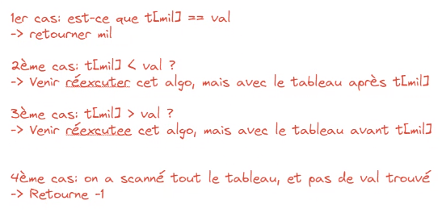

Méthode
Soit un tabeau de 6 valeurs : [3, 7, 11, 15, 22, 37]
Dans ce tableau on recherche une valeur précise : 22.
-
Etapes :
- Trouver la position la plus centrale du tableau (si le tableau est vide, sortir) : tab.length/2
- Récupérer la partie entière : mil = 15
- Si la valeur est égale à l'élément, alors retourner la position, sinon reprendre la procédure dans la moitié de tableau pertinente. 
On peut toujours se ramener à une moitié de tableau sur un tableau trié en ordre croissant. Si la valeur de la case est plus petite que l'élément, on continuera sur la moitié droite, c'est-à-dire sur la partie du tableau qui contient des nombres plus grands que la valeur de la case. Sinon, on continuera sur la moitié gauche.